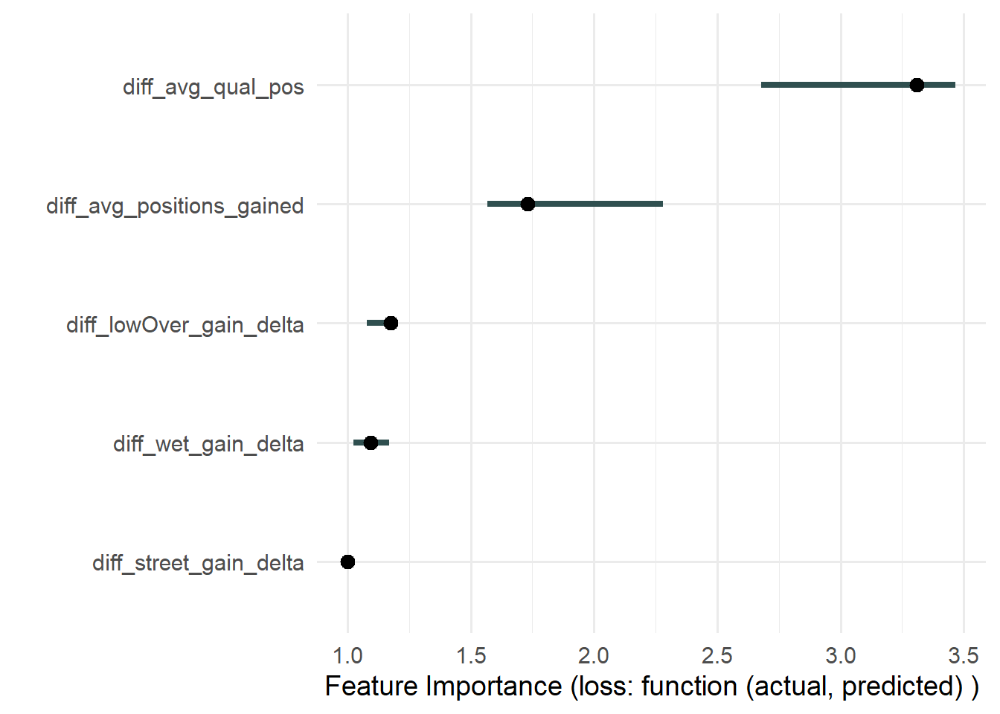

My analysis of the 2024 Formula 1 season reveals clear and consistent patterns in how drivers perform relative to their teammates once we account for context such as track type, wet weather, and overtaking difficulty. First, I analyzed intra-team comparisons for popular driver rating features: pace (based on qualifying performance) and racecraft (based on positions overtaken). Afterwards, I incorporated track type, track conditioners, and circuit difficulty to gain a better understanding of intra-team dynamics and success. Finally, I ran a basic prediction to determine how accounting for these external factors’ impact on pace and racecraft contribute to driver success, and I compared the prediction to the actual 2024 season standings. Across the grid, the strongest predictor of success is intuitive in that drivers who qualify better tend to finish better, even after adjusting for conditions. Racecraft helps explain additional differences, especially on street circuits and in wet weather, where confidence and adaptability matter even more. Visualizing these patterns highlights which drivers consistently extract more performance from their car and which teams show the largest gaps between their two drivers. Overall, the results paint a nuanced picture of driver skill that goes beyond championship points, offering a more context-aware understanding of what made certain drivers successful in 2024.
Code
# load packageslibrary(dplyr)
Attaching package: 'dplyr'
The following objects are masked from 'package:stats':
filter, lag
The following objects are masked from 'package:base':
intersect, setdiff, setequal, union
Code
library(tidyr)library(ggplot2)
Warning: package 'ggplot2' was built under R version 4.5.2
Warning: There was 1 warning in `mutate()`.
ℹ In argument: `race_time_sec = parse_time_to_seconds(time)`.
Caused by warning in `parse_time_to_seconds()`:
! NAs introduced by coercion
Code
qual <- qual_df_subset |>mutate(round =as.integer(round),qual_pos =suppressWarnings(as.integer(position)),driver =as.character(driver),driver_code =as.character(driver_code),constructor =as.character(constructor),Q1_sec =parse_time_to_seconds(Q1),Q2_sec =parse_time_to_seconds(Q2),Q3_sec =parse_time_to_seconds(Q3)) |>select(round, driver, driver_code, constructor, qual_pos, Q1_sec, Q2_sec, Q3_sec)# merge qualifying + race on round + driver_coderace_qual <- race |>left_join(qual |>select(round, driver_code, qual_pos, Q1_sec, Q2_sec, Q3_sec),by =c("round", "driver_code"))# compute positions_gained: (qual_pos - finish_pos)# if qual_pos is NA, fallback to grid_pos if available.race_qual <- race_qual |>mutate(qual_for_comparison =if_else(is.na(qual_pos), grid_pos, qual_pos),positions_gained = qual_for_comparison - finish_pos)team_stats_by_round <- race_qual |>group_by(round, constructor) |>summarize(mean_qual_pos =mean(qual_for_comparison, na.rm =TRUE),mean_finish_pos =mean(finish_pos, na.rm =TRUE),mean_positions_gained =mean(positions_gained, na.rm =TRUE),n_drivers =n(),n_missing_Q3 =sum(is.na(Q3_sec)),.groups ="drop")team_stats_overall <- race_qual |>group_by(constructor) |>summarize(avg_qual_pos =mean(qual_for_comparison, na.rm =TRUE),avg_finish_pos =mean(finish_pos, na.rm =TRUE),avg_positions_gained =mean(positions_gained, na.rm =TRUE),n_races =n(),.groups ="drop")# tracks_df for accounting for track featurestracks_df <-tibble(round =1:24,circuit =c("Bahrain International Circuit","Jeddah Corniche Circuit","Albert Park Circuit","Suzuka International Racing Course","Shanghai International Circuit","Miami International Autodrome","Imola Circuit","Circuit de Monaco","Circuit Gilles Villeneuve","Circuit de Barcelona-Catalunya","Red Bull Ring","Silverstone Circuit","Hungaroring","Circuit de Spa-Francorchamps","Circuit Zandvoort","Monza Circuit","Baku City Circuit","Marina Bay Street Circuit","Circuit of the Americas","Autódromo Hermanos Rodríguez","Interlagos Circuit","Las Vegas Strip Circuit","Lusail International Circuit","Yas Marina Circuit" ))street_circuits <-c("Jeddah Corniche Circuit","Albert Park Circuit","Miami International Autodrome","Circuit de Monaco","Circuit Gilles Villeneuve","Baku City Circuit","Marina Bay Street Circuit","Las Vegas Strip Circuit")tracks_df <- tracks_df |>mutate(circuit_type =ifelse(circuit %in% street_circuits, "street", "permanent") )wet_races <-c(9, 12, 21)tracks_df <- tracks_df |>mutate(is_wet_race = round %in% wet_races)wet_qual <-c(12, 13, 14, 21)tracks_df <- tracks_df |>mutate(is_wet_qual = round %in% wet_qual)team_stats_by_round <- team_stats_by_round |>left_join(tracks_df, by ="round")race_qual <- race_qual |>left_join(tracks_df, by ="round")# compute empirical overtaking score per round = mean absolute positions changedovertake_by_round <- race_qual |>group_by(round) |>summarize(overtaking_score =mean(abs(positions_gained), na.rm =TRUE),.groups ="drop" )tracks_df <- tracks_df |>left_join(overtake_by_round, by ="round")# add overtaking score into race_qualrace_qual <- race_qual |>left_join(tracks_df |>select(round, overtaking_score), by ="round")team_stats_by_round <- team_stats_by_round |>left_join(tracks_df |>select(round, overtaking_score), by ="round")# join tracks info back to team_stats_by_round and race_qualhead(tracks_df)
# A tibble: 6 × 6
round circuit circuit_type is_wet_race is_wet_qual overtaking_score
<int> <chr> <chr> <lgl> <lgl> <dbl>
1 1 Bahrain Internati… permanent FALSE FALSE 2.3
2 2 Jeddah Corniche C… street FALSE FALSE NA
3 3 Albert Park Circu… street FALSE FALSE NA
4 4 Suzuka Internatio… permanent FALSE FALSE NA
5 5 Shanghai Internat… permanent FALSE FALSE 2.9
6 6 Miami Internation… street FALSE FALSE NA
Code
head(race_qual)
# A tibble: 6 × 21
round driver driver_code constructor finish_pos grid_pos laps status points
<int> <chr> <chr> <chr> <int> <int> <int> <chr> <dbl>
1 1 Verstap… VER Red Bull 1 1 57 Finis… 26
2 1 Pérez PER Red Bull 2 5 57 Finis… 18
3 1 Sainz SAI Ferrari 3 4 57 Finis… 15
4 1 Leclerc LEC Ferrari 4 2 57 Finis… 12
5 1 Russell RUS Mercedes 5 3 57 Finis… 10
6 1 Norris NOR McLaren 6 7 57 Finis… 8
# ℹ 12 more variables: race_time_sec <dbl>, qual_pos <int>, Q1_sec <list>,
# Q2_sec <list>, Q3_sec <list>, qual_for_comparison <int>,
# positions_gained <int>, circuit <chr>, circuit_type <chr>,
# is_wet_race <lgl>, is_wet_qual <lgl>, overtaking_score <dbl>
Code
# Graph 1 - Raw Pace Comparisonggplot( race_qual |>filter(!is.na(qual_for_comparison)),aes(x =fct_reorder(driver, qual_for_comparison, .fun = median),y = qual_for_comparison)) +geom_boxplot(width =0.12, outlier.size =0.8, alpha =0.9) +# reverse the axis that becomes horizontalscale_y_reverse(breaks =c(1, 5, 10, 15, 20)) +coord_flip() +facet_wrap(~ constructor, scales ="free_y") +labs(title ="Intra-Team Qualifying Pace Comparison",subtitle ="Lower (faster) qualifying positions shown on the right.",x ="Driver",y ="Qualifying Position") +theme_bw(base_size =12) +theme(strip.text =element_text(size =8, face ="bold"),strip.background =element_rect(fill ="gray95"),plot.title =element_text(size =18, face ="bold"),plot.subtitle =element_text(size =12, margin =margin(b =8)),legend.position ="none",panel.grid.minor =element_blank(),axis.text.x =element_text(angle =0, hjust =0.5, size =8))
##How do teammates compare in qualifying pace? - Drivers within the same car often show meaningful performance gaps.
Drivers within the same team use identical cars, so differences in their qualifying positions reveal how much performance comes from the driver rather than the machinery. Moreover, this is an extremely common metric for evaluating pace when rating drivers. Across the grid, several teams show clear internal gaps: for example, Verstappen at Red Bull and Leclerc at Ferrari consistently qualify several positions ahead of their teammates. Other teams, such as McLaren, show much tighter spreads, indicating more evenly matched driver pairings in terms of pace. Teams that rotated drivers mid-season display wider and noisier distributions because some drivers have fewer appearances.
##Teammate Comparisons Reveal Which Drivers Consistently Extract More Pace From the Car
Across the season, average Q1–Q3 times highlight meaningful performance gaps within several teams. This visualization allows us an easier at a glance look at intra-team dynamics in that the drivers with missing higher quarter times and higher mean times per session indicate weaker performance in comparison to their teammate.
Code
# Graph 3 — Racecraft Comparisonggplot( race_qual |>filter(!is.na(positions_gained)),aes(x =fct_reorder(driver, positions_gained, .fun = median),y = positions_gained)) +geom_boxplot(alpha =0.8, outlier.size =1, width =0.6) +coord_flip() +facet_wrap(~ constructor, scales ="free_y") +labs(title ="Intra-Team Racecraft Comparison",subtitle ="Drivers who consistently make up positions from qualifying start higher.\nNegative values indicate drivers who tend to lose positions.",x ="Driver",y ="Positions Gained (qual → finish)" ) +theme_bw(base_size =12) +theme(strip.text =element_text(size =9, face ="bold"),strip.background =element_rect(fill ="gray95"),legend.position ="none",panel.grid.minor =element_blank() )
3.1 Compare differences in positions gained within each constructor to determine racecraft abilities, indicating higher competenecies in overtaking and defending position.
This racecraft analysis highlights how effectively each driver converts their qualifying position into race results, revealing substantial differences within several teams. Norris, Sainz, and Hamilton consistently gain positions on race day, marking them as standouts in overtaking, tire management, or race strategy execution. Their teammates, Piastri, Leclerc, and Russell, show slightly more variable outcomes, typically gaining fewer positions. One of the more interesting performances is Red Bull: Verstappen rarely gains or loses positions because he starts at the front, while Perez may slip backward from strong qualifying spots, emphasizing a persistent race-day deficit. Overall, the plot shows that while qualifying pace sets the stage, racecraft varies meaningfully within teams and strongly influences final outcomes.
Code
# Graph 4 — Wet vs. Dry Conditions Pace Comparisonwet_pace <- race_qual |>filter(!is.na(is_wet_qual)) |>group_by(constructor, is_wet_qual) |>summarize(mean_qual =mean(qual_for_comparison, na.rm =TRUE), .groups ="drop")if (nrow(wet_pace) >0) {ggplot(wet_pace, aes(x =as.factor(is_wet_qual), y = mean_qual, group = constructor, color = constructor)) +geom_line(aes(group = constructor), linewidth =1) +geom_point(size =2) +scale_x_discrete(labels =c("dry","wet")) +labs(title ="Team Pace: Wet vs Dry (mean qualifying position)",x ="Condition", y ="Mean Qualifying Position (lower = faster)") +constructor_palette} else {ggplot() +labs(title ="No wet/dry labels found in tracks_df — fill tracks_df$is_wet to enable this plot")}
3.2 We are analyzing race pace in wet weather qualifying conditions compared to dry. Wet weather dramatically reduces grip and visibility, some consider it to even equalize differences in car performance.
This comparison of average qualifying performance in wet versus dry sessions reveals that most teams experience only modest changes in pace when conditions worsen, but a few show dramatic shifts. McLaren and Ferrari stand out as the strongest wet-weather qualifiers, improving relative to the field when the track becomes slippery—suggesting their cars maintain tire temperature and mechanical grip well. Aston Martin also gains performance in the wet, climbing several grid spots on average. On the other hand, traditionally strong teams like Mercedes and Red Bull qualify noticeably worse in the wet, indicating that their setups or driver comfort are more sensitive to unstable grip levels. Lower-grid teams such as Sauber and Williams remain near the back in both conditions.
3.3 Subheading: Who Thrives When the Track Turns Wet? Intra-Team Pace Under Rain Conditions
Wet qualifying compresses the field and is said to expose pure driver skill. Across teams, the drivers positioned farther to the right are those who deliver stronger wet-weather performance. McLaren sees Norris consistently outperform Piastri in the rain, while Hamilton shows a noticeable wet-pace advantage over Russell at Mercedes. Ferrari’s intra-team battle tightens, with Sainz marginally outperforming Leclerc when grip is at a premium. Red Bull’s wet performance split is especially stark in that Verstappen reliably anchors the right side of the distribution while Pérez drifts left, indicating greater difficulty in low-grip conditions. Teams lower in the order—such as Williams and Alpine display tighter teammate groupings, suggesting car limitations overshadow driver differences.
Code
# Graph 6 — Wet vs. Dry Conditions Racecraft Comparisonlibrary(Polychrome)
Warning: package 'Polychrome' was built under R version 4.5.2
Code
driver_palette <-createPalette(length(unique(race_qual$driver)), seedcolors=c("#ff0000"))names(driver_palette) <-sort(unique(race_qual$driver))wetdry_driver <- race_qual |>filter(!is.na(is_wet_race)) |>mutate(condition =ifelse(is_wet_race, "Wet", "Dry"),condition =factor(condition, levels =c("Dry", "Wet")) )# Summarize per driver per conditionwetdry_driver_summary <- wetdry_driver |>group_by(constructor, driver, condition) |>summarize(mean_gain =mean(positions_gained, na.rm =TRUE),.groups ="drop" )ggplot( wetdry_driver_summary,aes(x = condition,y = mean_gain,group = driver,color = driver )) +geom_point(size =2) +geom_line(alpha =0.8, linewidth =0.9) +scale_x_discrete(limits =c("Dry", "Wet")) +scale_color_manual(values = driver_palette) +# <-- NEW PALETTEfacet_wrap(~ constructor,scales ="free_y",labeller =label_wrap_gen(width =12)) +labs(title ="Wet vs Dry Racecraft: Intra-Team Comparison",subtitle ="Each line represents one driver within a team, showing how their average positions gained changes in wet vs dry races.",x ="Conditions",y ="Mean Positions Gained",color ="Driver" ) +theme_bw(base_size =12) +theme(strip.text =element_text(size =8, face ="bold"),strip.background =element_rect(fill ="gray95"),panel.grid.minor =element_blank(),plot.title =element_text(size =14, face ="bold"),plot.subtitle =element_text(size =10),legend.position ="right",legend.key.size =unit(0.45, "lines"),legend.text =element_text(size =7),legend.title =element_text(size =8, face ="bold"),legend.spacing.y =unit(0.1, "cm")) +guides(color =guide_legend(ncol =1))
3.4 How Teams Gain or Lose Positions in Wet vs Dry Races
This visualization highlights how teams show drivers who thrive when the track gets slippery. For example, both Alpine, Sauber, and Haas see strong positive gains in the wet, with certain drivers making significantly more progress than they manage in dry races. These trends suggest confident car control and adaptability under low-grip conditions. By contrast, Aston Martin, RB, and Williams show the opposite behavior, where drivers tend to perform worse in wet races, losing more positions on average compared to their dry-race results. Mercedes, Red Bull, and McLaren reveal clear divergence between teammates in that one driver improves dramatically in the wet while the other falls off, indicating that wet-weather performance is more driver-dependent rather than car-dependent in these teams.
`geom_line()`: Each group consists of only one observation.
ℹ Do you need to adjust the group aesthetic?
`geom_line()`: Each group consists of only one observation.
ℹ Do you need to adjust the group aesthetic?
`geom_line()`: Each group consists of only one observation.
ℹ Do you need to adjust the group aesthetic?
`geom_line()`: Each group consists of only one observation.
ℹ Do you need to adjust the group aesthetic?
`geom_line()`: Each group consists of only one observation.
ℹ Do you need to adjust the group aesthetic?
`geom_line()`: Each group consists of only one observation.
ℹ Do you need to adjust the group aesthetic?
`geom_line()`: Each group consists of only one observation.
ℹ Do you need to adjust the group aesthetic?
`geom_line()`: Each group consists of only one observation.
ℹ Do you need to adjust the group aesthetic?
`geom_line()`: Each group consists of only one observation.
ℹ Do you need to adjust the group aesthetic?
`geom_line()`: Each group consists of only one observation.
ℹ Do you need to adjust the group aesthetic?
3.5 How Drivers Adapt Their Pace Across Street vs Permanent Circuits - Street Circuits Can Require Greater Confidence and Precision
Across teams, most drivers demonstrate noticeably different qualifying performance depending on circuit type, reinforcing that pace is strongly track-dependent. Mercedes, Alpine, and Williams show consistent improvements on street circuits, where lower-speed technical sections reward mechanical grip and confidence on the limit. Conversely, McLaren, Haas, Red Bull, and Sauber tend to perform similarly or even slightly worse on street tracks, suggesting their strengths lean toward high-speed or more traditional layouts. Within-team variation is especially notable in Ferrari, RB, and Aston Martin, where one driver seems to improve on street circuits while the other seems to lose pace.
`geom_line()`: Each group consists of only one observation.
ℹ Do you need to adjust the group aesthetic?
`geom_line()`: Each group consists of only one observation.
ℹ Do you need to adjust the group aesthetic?
`geom_line()`: Each group consists of only one observation.
ℹ Do you need to adjust the group aesthetic?
`geom_line()`: Each group consists of only one observation.
ℹ Do you need to adjust the group aesthetic?
`geom_line()`: Each group consists of only one observation.
ℹ Do you need to adjust the group aesthetic?
`geom_line()`: Each group consists of only one observation.
ℹ Do you need to adjust the group aesthetic?
`geom_line()`: Each group consists of only one observation.
ℹ Do you need to adjust the group aesthetic?
`geom_line()`: Each group consists of only one observation.
ℹ Do you need to adjust the group aesthetic?
`geom_line()`: Each group consists of only one observation.
ℹ Do you need to adjust the group aesthetic?
`geom_line()`: Each group consists of only one observation.
ℹ Do you need to adjust the group aesthetic?
3.6 Do Drivers Perform Better on Street or Permanent Circuits? Intra-Team Racecraft Patterns
This plot compares how each driver’s positions gained relative to qualifying differ between street circuits and permanent tracks. A lot of street circuits, like Monaco and Baku, are notably difficult for overtaking due to their narrow stretches, so overtaking during these races is rare and impressive, yet sometimes may just be a result of a lucky strategy call. Some teams show notable intra-team differences in drivers’ racecraft on street circuits. Specifically, Mclaren’s Norris beats Piastri, Haas’ Hulkenberg beats Magnussen, and Aston Martin’s Alonso beats Stroll.
3.7 Which Drivers Gain More Places on Circuits Where Overtaking Is Easier?
This scatter-and-facet plot compares each driver’s average positions gained with the overtaking friendliness of circuits. Some drivers like appear to gain positions consistently, like Leclerc, Zhou, Gasly, and Hulkenberg. The intra-team facets also show clearly which teammates outperform each other in that even with identical machinery, some consistently gain positions where their teammates do not.
Code
# Interpretable ML: Trying to predict which driver finishes ahead within their team in the 2024 season based on their skills (accounting for differences in circuits)# median overtaking score to define "low vs high overtaking" tracksovertake_med <-median(race_qual$overtaking_score, na.rm =TRUE)driver_feats <- race_qual |>group_by(constructor, driver, driver_code) |>summarize(n_races =n(),avg_qual_pos =mean(qual_for_comparison, na.rm =TRUE),avg_finish_pos =mean(finish_pos, na.rm =TRUE),avg_positions_gained =mean(positions_gained, na.rm =TRUE),# Wet vs dry racecraftmean_gain_dry =mean(positions_gained[is_wet_race ==FALSE], na.rm =TRUE),mean_gain_wet =mean(positions_gained[is_wet_race ==TRUE], na.rm =TRUE),# Street vs permanent racecraftmean_gain_perm =mean(positions_gained[circuit_type =="permanent"], na.rm =TRUE),mean_gain_street =mean(positions_gained[circuit_type =="street"], na.rm =TRUE),# Low vs high overtaking-score racecraftmean_gain_lowOver =mean(positions_gained[overtaking_score < overtake_med], na.rm =TRUE),mean_gain_highOver =mean(positions_gained[overtaking_score >= overtake_med], na.rm =TRUE),.groups ="drop" ) |>mutate(wet_gain_delta =replace_na(mean_gain_wet - mean_gain_dry, 0),street_gain_delta=replace_na(mean_gain_street- mean_gain_perm, 0),lowOver_gain_delta =replace_na(mean_gain_lowOver - mean_gain_highOver, 0) ) |>select( constructor, driver, driver_code, n_races, avg_qual_pos, avg_finish_pos, avg_positions_gained, wet_gain_delta, street_gain_delta, lowOver_gain_delta )driver_feats <- driver_feats |>mutate(across(where(is.numeric), ~replace_na(.x, 0)))# create per-race teammate pairs: Driver A vs Driver Brace_pairs <- race_qual |>filter(!is.na(finish_pos)) |>group_by(round, constructor) |># keep only races where the team had exactly 2 classified driversfilter(n() ==2) |>arrange(round, constructor, driver_code) |>mutate(role =c("A", "B")) |>ungroup() |>select(round, constructor, role, driver, driver_code, finish_pos) |> tidyr::pivot_wider(names_from = role,values_from =c(driver, driver_code, finish_pos),names_sep ="_" ) |>mutate(A_beats_B =as.integer(finish_pos_A < finish_pos_B) # 1 if A finishes ahead )# join features for driver Apairs_with_feat <- race_pairs |>left_join( driver_feats,by =c("constructor", "driver_A"="driver"),suffix =c("", "_A") ) |>rename_with(~paste0(.x, "_A"),c(avg_qual_pos, avg_finish_pos, avg_positions_gained, wet_gain_delta, street_gain_delta, lowOver_gain_delta))# join features for driver Bpairs_with_feat <- pairs_with_feat |>left_join( driver_feats,by =c("constructor", "driver_B"="driver") ) |>rename_with(~paste0(.x, "_B"),c(avg_qual_pos, avg_finish_pos, avg_positions_gained, wet_gain_delta, street_gain_delta, lowOver_gain_delta))# build "difference" features: (A - B)pair_model <- pairs_with_feat |>mutate(diff_avg_qual_pos = avg_qual_pos_A - avg_qual_pos_B,diff_avg_positions_gained= avg_positions_gained_A - avg_positions_gained_B,diff_wet_gain_delta = wet_gain_delta_A - wet_gain_delta_B,diff_street_gain_delta = street_gain_delta_A - street_gain_delta_B,diff_lowOver_gain_delta = lowOver_gain_delta_A - lowOver_gain_delta_B ) |>select( round, constructor, driver_A, driver_B, A_beats_B,starts_with("diff_") ) |>drop_na(A_beats_B, starts_with("diff_"))head(pair_model)
# A tibble: 6 × 10
round constructor driver_A driver_B A_beats_B diff_avg_qual_pos
<int> <chr> <chr> <chr> <int> <dbl>
1 1 Alpine F1 Team Gasly Ocon 0 4
2 1 Aston Martin Alonso Stroll 1 -5.25
3 1 Ferrari Leclerc Sainz 0 -4.25
4 1 Haas F1 Team Hülkenberg Magnussen 0 -2.83
5 1 McLaren Norris Piastri 1 -2.5
6 1 Mercedes Hamilton Russell 0 6.75
# ℹ 4 more variables: diff_avg_positions_gained <dbl>,
# diff_wet_gain_delta <dbl>, diff_street_gain_delta <dbl>,
# diff_lowOver_gain_delta <dbl>
Call:
glm(formula = A_beats_B ~ diff_avg_qual_pos + diff_avg_positions_gained +
diff_wet_gain_delta + diff_street_gain_delta + diff_lowOver_gain_delta,
family = binomial(), data = pair_model)
Coefficients: (1 not defined because of singularities)
Estimate Std. Error z value Pr(>|z|)
(Intercept) -0.49200 0.43760 -1.124 0.26087
diff_avg_qual_pos -0.57307 0.18429 -3.110 0.00187 **
diff_avg_positions_gained 0.41618 0.16443 2.531 0.01137 *
diff_wet_gain_delta 0.08626 0.08331 1.035 0.30044
diff_street_gain_delta NA NA NA NA
diff_lowOver_gain_delta 0.14775 0.10827 1.365 0.17237
---
Signif. codes: 0 '***' 0.001 '**' 0.01 '*' 0.05 '.' 0.1 ' ' 1
(Dispersion parameter for binomial family taken to be 1)
Null deviance: 55.352 on 39 degrees of freedom
Residual deviance: 40.163 on 35 degrees of freedom
AIC: 50.163
Number of Fisher Scoring iterations: 4
# A tibble: 23 × 4
constructor predicted_team_rank driver skill_score
<chr> <int> <chr> <dbl>
1 Alpine F1 Team 1 Gasly NA
2 Alpine F1 Team 2 Ocon NA
3 Aston Martin 1 Alonso NA
4 Aston Martin 2 Stroll NA
5 Ferrari 1 Leclerc NA
6 Ferrari 2 Sainz NA
7 Haas F1 Team 1 Bearman NA
8 Haas F1 Team 2 Hülkenberg NA
9 Haas F1 Team 3 Magnussen NA
10 McLaren 1 Norris NA
# ℹ 13 more rows
3.8 Comparing predicted intra-team rankings to actual finishing order from the 2024 season
This plot compares each driver’s predicted intra-team ranking—based on qualifying pace, racecraft, wet-weather adjustments, street/permanent circuit effects, and low-overtake performance with their actual 2024 finishing order within their team.
Overall, the model performs surprisingly well given its simplicity. It almost completely ranks each drivers’ intra-team standing accurately compared to the actual 2024 drivers’ champioship standings. Some of the teams have a 3rd driver considered due to mid-season switches, which skews the analysis. However, of the team with 2 drivers, it seems that only Sauber was ranked incorrectly. Moreover, the Sauber mismatches likely stem from Bottas’s unusually unlucky season relative to Zhou, despite underlying pace indicators suggesting the reverse. Some discrepancies arise in situations where 2024 real-world results were shaped by externalities not captured in the model, like Magnussen’s unusual crash-heavy season distort the underlying pace-based expectation.
Despite these exceptions, the model’s broad accuracy indicates that racecraft, qualifying pace, and condition-dependent performance explain a substantial portion of intra-team outcomes. This makes it a strong foundation for interpretable ML and a great candidate for further analysis via Shapley values.
Code
# Graph 11 - Posthoc ML Analysis with Shapley Values!library(iml)
Warning: package 'iml' was built under R version 4.5.2
Warning: package 'future' was built under R version 4.5.2
Warning: package 'listenv' was built under R version 4.5.2
Warning: package 'scatterplot3d' was built under R version 4.5.2
Warning: package 'parallelly' was built under R version 4.5.2
Warning: package 'Metrics' was built under R version 4.5.2
Warning: package 'checkmate' was built under R version 4.5.2
Warning: package 'globals' was built under R version 4.5.2
Warning: package 'visdat' was built under R version 4.5.2
Code
plot(imp)
Warning: Using `size` aesthetic for lines was deprecated in ggplot2 3.4.0.
ℹ Please use `linewidth` instead.
ℹ The deprecated feature was likely used in the iml package.
Please report the issue at <https://github.com/giuseppec/iml/issues>.

3.9 Feature Importance: Which Factors Most Influence Intra-Team Outcomes?
The Shapley-based feature importance analysis shows that average qualifying advantage overwhelmingly drives the model’s ability to predict which teammate finishes ahead. Racecraft plays a secondary role, offering modest predictive value, while situational effects—wet-weather performance, street-track advantage, and performance on low-overtaking circuits—contribute very little overall. This suggests that across a full season, consistent single-lap pace may be the clearest and most reliable differentiator between teammates, with racecraft providing additional but smaller impact.